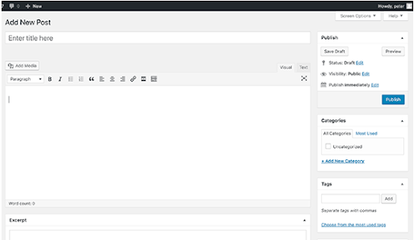
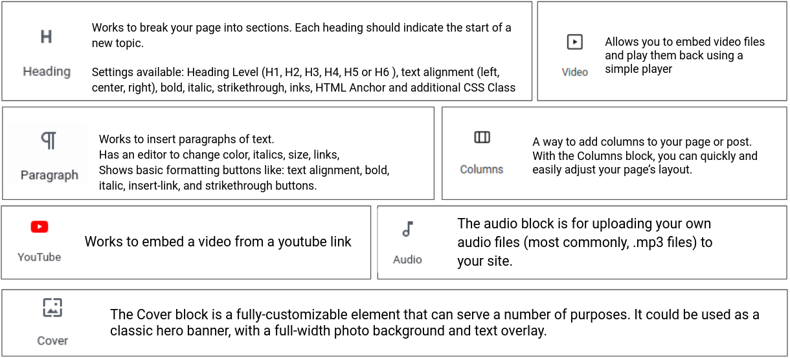

Use of gutenberg (default)
The entire editing experience has been rebuild for media rich pages and posts because since Wordpress 5.0 has included the Gutenberg Editor that give us the ability to build using “Blocks”.
Blocks are pieces of content elements. With them, users can insert, rearrange and style multimedia content with very little technical knowledge.
https://wordpress.org/gutenberg

Differences between Block Editor Gutenberg and Classic Editor
Block Editor
Uses a totally different approach, called ‘Blocks’. You can add blocks for each paragraph, images, videos, galleries, audio, lists, and more.
With the new editor, you can simply add a table block, select your columns and rows, and start adding content. You can move content elements up and down, edit them as individual blocks, and easily create media-rich content. Is easy to use and learn.
Classic Editor
A text editor with formatting buttons very similar to Microsoft Word.

Selection of the default blocks included with Gutenberg

Creating a new blog post or page
Block edit side menu
When selecting a block, you will find options for configuring that block in this menu.
Side document editing menu
When you need to change the general configuration of the product and not a specific block, access this menu. Ex: Categories, tags, featured image.
When you're done, you can save your post / page as a draft, preview or publish